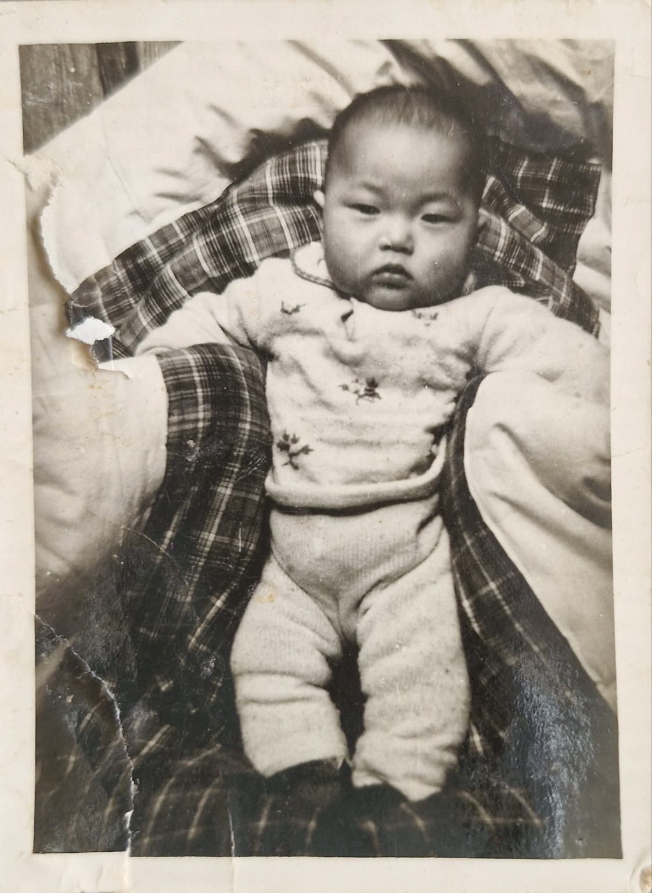
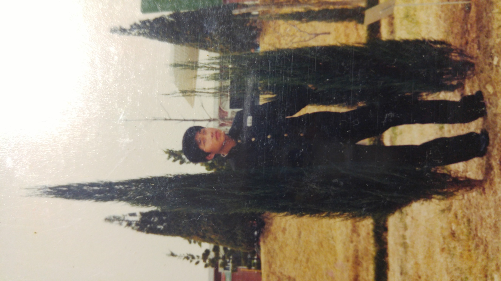
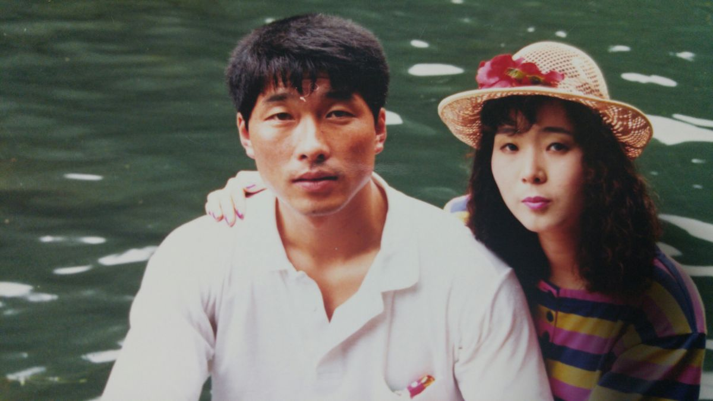
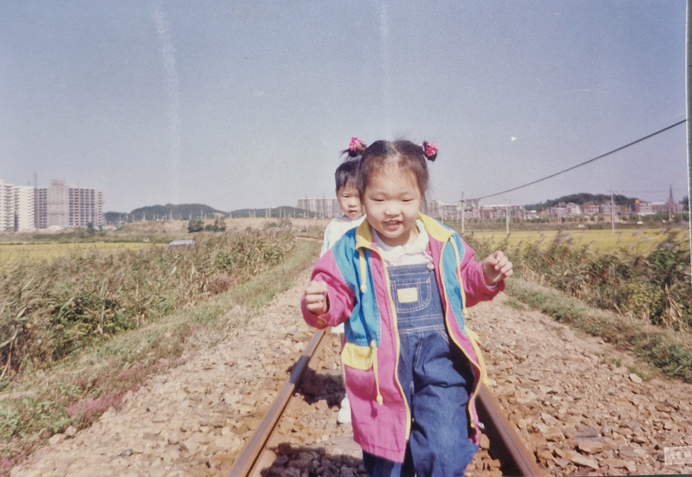
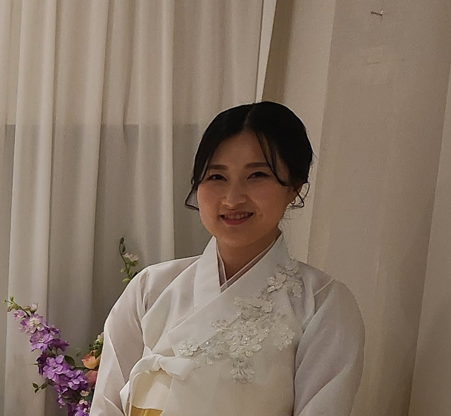
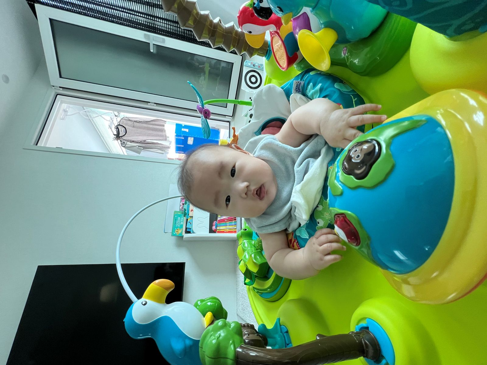

1962
탄생과 새로운 시작
조병일, 대한민국에서 탄생. 가족의 소중한 아들로 첫발을 내딛다.

1979
청소년 시절과 성장
학업과 우정, 가족과 함께 성장하며 인생의 꿈을 키우던 시기.

1990
사랑, 결혼, 그리고 가족
김미숙님과의 만남과 결혼, 따뜻한 가정의 시작.

1991
큰딸 조아롱 탄생
기쁨과 책임, 가족의 행복이 더해진 순간.

1992
작은딸 조아랑 탄생
더욱 풍성해진 가족, 희망과 사랑이 넘치는 집.

2025
외손녀 이유하 탄생
새로운 세대, 가족의 미래, 대를 잇는 기쁨.

2025
“영원의 집” 1호 입주
조병일, 가족과 함께 영원의 집 프로젝트의 첫 입주자로 새로운 역사를 시작하다.